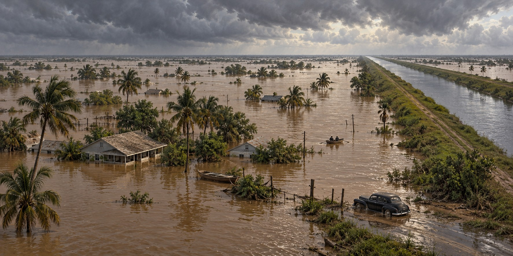

The Flood That Changed South Florida
The Dike Held in 1947. The Canals Did Not. That Is Why South Florida’s Water System Looks the Way It Does Today.

South Florida’s 1947 floods demonstrated that protecting Lake Okeechobee’s shore did not solve every regional water problem. An unusually wet year, including hurricanes in September and October, left widespread standing water. The disaster helped drive creation of a larger flood-control system that still shapes South Florida.
A Drought That Ended All at Once
South Florida entered 1947 in a decade-long drought, dry enough that the Everglades were vulnerable to fire. An unusually wet spring then pushed the water table to dangerous levels before hurricane season began, forcing the Everglades Drainage District into emergency meetings as early as July.
A hurricane crossed South Florida in September, with gusts as high as 127 miles per hour in Fort Lauderdale, onto ground already saturated. A second hurricane struck in October. Rainfall along the lower east coast reached roughly 100 inches that year, nearly double the historical average, replacing a decade of drought with the worst flooding the region had recorded to that point.
The Dike That Worked
The Herbert Hoover Dike performed as intended in 1947. The lake-shore levee built after 1928 held through both hurricanes, and the specific problem it was built to solve, a lake breaching its banks and drowning the farming communities on its southern shore, did not recur. What failed was the canal system built to drain farmland, not the lake’s containment structure.
Whose Water Was It?
The Everglades Drainage District faced a dilemma: keep canal floodgates open to drain water away from farmland south of the lake, or close them and let farmland flood to spare the coast. It kept the canals open, which pushed a large share of the floodwater toward the coast. East coast residents accused the District of endangering their lives to protect agricultural interests upstream. The District denied the charge, and the surviving record does not settle the question of motive.
Congress Builds a Bigger System
Florida’s leaders concluded that separate drainage districts could no longer manage a fast-growing region. Florida asked for a federal master plan, and in 1948 Congress authorized the Central and Southern Florida Project for Flood Control and Other Purposes at $208 million. The Legislature created the Central and Southern Florida Flood Control District in 1949 as local sponsor, absorbing both the Okeechobee Flood Control District and the Everglades Drainage District. The Corps spent more than twenty years building canals, levees, pump stations and water control structures from just south of Orlando to Florida Bay.
What the System Still Does, and What It Cost
The district was renamed the South Florida Water Management District in 1977. Today it moves roughly twenty million acre-feet of water a year and provides flood control and water supply for more than nine million residents in sixteen counties. The same system has also caused extreme habitat degradation across the Everglades, Lake Okeechobee and the coastal estuaries. The system that reduced flood risk also reshaped the landscape it was built to control, not always for the better.
Quick Facts
| What held | The Herbert Hoover Dike |
|---|---|
| What failed | The drainage canal system, which discharged floodwater toward the coast |
| 1947 rainfall | Roughly 100 inches on the lower east coast, nearly double the average |
| 1948 | Congress authorizes the Central and Southern Florida Project |
| 1949 | Central and Southern Florida Flood Control District created |
| 1977 | Renamed the South Florida Water Management District |
Did You Know?
The dike held in 1947; the failure was in the drainage canals.
Rainfall that year was nearly double the average, ending a decade of drought.
Vocabulary
Levee: an embankment built to hold back water.
Drainage district: a public agency that drains land for farming or development.
Floodgate: a gate that controls water flow in a canal.
Discussion Questions
1. Why did the 1947 flood lead to a bigger water system than the 1928 hurricane did?
2. How should historians treat an accusation they cannot prove or disprove?
Related Articles
FLH-0004 — The Okeechobee Hurricane of 1928
FLH-0026 — Building the Herbert Hoover Dike
FLH-0027 — Why Lake Okeechobee Became Dangerous
FLH-0029 — Take Care of the Water
Sources
South Florida Water Management District. “History” and “75th Anniversary and Ongoing Restoration Efforts.” sfwmd.gov
St. Johns River Water Management District. “Florida Water Management History, 1900–1949.” sjrwmd.com
Thurlow-Lippisch, Jacqui. “Florida’s Flood System Built on 1947 Hurricane Season.” (quotes Senator Spessard Holland). jacquithurlowlippisch.com
Property and Environment Research Center. “Who Drained the Everglades?” perc.org
ClickOrlando. “These Are Some of the Worst Floods in Florida History.” clickorlando.com
U.S. Government Accountability Office. Report on Everglades flood history, 1999.
Wikipedia. “Central and Southern Florida Project” and “1947 Fort Lauderdale Hurricane.”